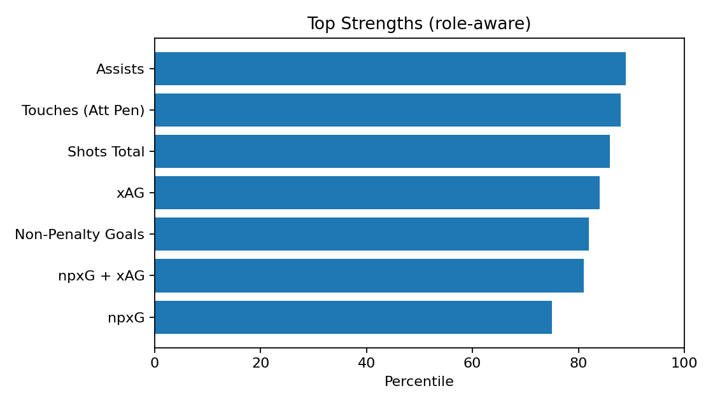
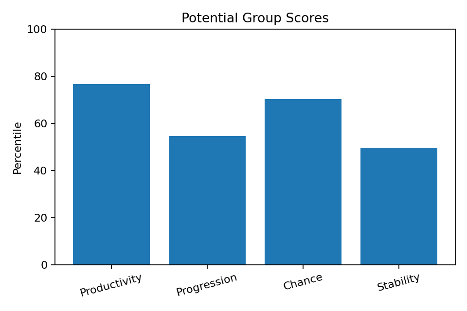
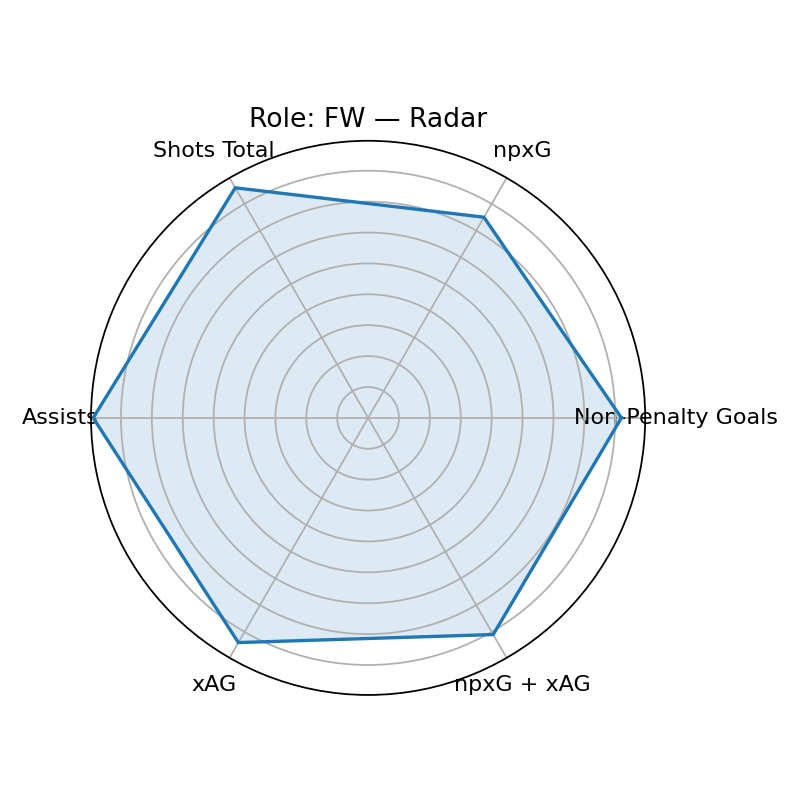

Scout Visual — Marcus Rashford
Player ID: a1d5bd30 · Role: FW · Minutes: 2138 · Age: 27
Current: None (base None, rel None, age None)
Potential: 60.4 — Groups: 76.7/54.6/70.3/49.7
Top Strengths

Potential Groups

Role/Style Radar

Playstyle Engine
Primary: Inside Forward (82.1)
Top-3: Inside Forward(82.1), Poacher(78.6), Inverted Winger(72.4)
근거: Non-Penalty Goals 상위 82퍼센(강점) · Shots Total 상위 86퍼센(강점) · Touches (Att Pen) 상위 88퍼센(강점)
개선: 핵심 보완 포인트 없음(상대적 우수)
Wikipedia-derived Qualitative
Qual Score: 95.5
injury=4, discipline=3,
transfer=0, char+= 5,
char-= 0, recent_w=1.0
Wikipedia: https://en.wikipedia.org/wiki/Marcus%20Rashford
Bias Diagnostics
Mode: v3
Diversity: 0.813
Imbalance penalty: 5.4
Uncertainty penalty: 2.5
Age gain: 6.2
Narrative — Current
[현재력] 역할=FW, 최종점수=79.3 / 강점: Assists(89p), Touches (Att Pen)(88p), Shots Total(86p), xAG(84p), Non-Penalty Goals(82p) / 약점(역할기반): Progressive Passes(15p) / 기초=67.8, 출전보정=1.8, 나이표시=0.8
Narrative — Potential
[잠재력 v3] 역할=FW, 잠재점수=60.4 / 그룹: 생산76/전진54/찬스70/안정49 / 엘리트95+ 2, 99+ 0, 다양성=0.813 / 불확실성패널티=2.5, 불균형패널티=5.4, 나이이득=6.2
Coaching — Style-specific
- Non-Penalty Goals 유지+응용: 역압박 상황 전개/선택지 추가 / 주 1회(클립 5개)
- npxG 유지+응용: 역압박 상황 전개/선택지 추가 / 주 1회(클립 5개)
- Shots Total 유지+응용: 역압박 상황 전개/선택지 추가 / 주 1회(클립 5개)
- Touches (Att Pen) 유지+응용: 역압박 상황 전개/선택지 추가 / 주 1회(클립 5개)
- Successful Take-Ons 상향: 난이도 상승(제한터치·시간압박) / 주 2회(10분)
- Progressive Carries 상향: 난이도 상승(제한터치·시간압박) / 주 2회(10분)
Growth Roadmap — Phased
- · 0~6주: 고난도 상황 반복(압박/시간 제약) 주 2세션 / 파이널 서드 의사결정 트리 15분 / 컷인→원터치/투터치 마무리 50회 / 하프스페이스 진입 각 만들기(콘 패턴)
- · 6~12주: 슈팅 의사결정(니어/파/리턴) 시뮬 20세트 / 좌우 발 동일 루틴(균형)
- · 12주+: 상위권 DF 상대 1v1 클립 5개 분석·복기 / xG 대비 득점 효율 5%p↑ / Non-Penalty Goals: 82→85 퍼센 상향 / npxG: 75→85 퍼센 상향